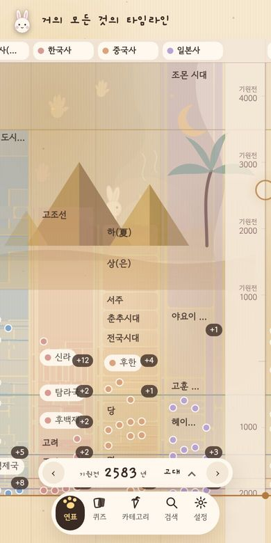

처음 / 만드는 것
만드는 것
모두 무료 · 회원가입 없음 · 기기 안에 저장

공개거의 모든 것의 타임라인
한·중·일과 세계 역사를 한 시간축에. 웹앱(PWA).
 곧 공개
곧 공개스페이스서퍼 달토끼
한 손가락 우주 중력 퍼즐. 웹판 먼저, 안드로이드 다음.
만들고 있는 것
- 시로의 커피 레시피 — 추출 레시피와 타이머, 타이머 위에서 커피를 내리는 시로. 공개용 도구판으로 다듬는 중.
- 시로 도장 출석부 — 출석하면 커피 스탬프 카드에 시로 도장이 찍히는 iOS 출석부. 아이 정보가 들어갈 수 있어 서버로 아무것도 보내지 않게 만듭니다.
새 작품이 나오면 소식에 먼저 올립니다.